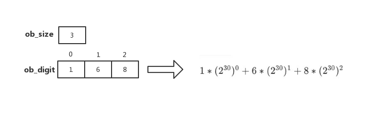

Python 整数对象
CPython2 的整数对象 有 PyIntObject 和 PyLongObject 这两种类型，
CPython3 只保留了 PyLongObject
在 源文件：Objects/longobject.c
的第三行有这么一句话 XXX The functional organization of this file is terrible
可见这个变化不是一蹴而就的，有比较艰辛的过程，大家有兴趣可以去挖掘一下
PyLongObject
// longobject.h
typedef struct _longobject PyLongObject; /* Revealed in longintrepr.h */
// longintrepr.h
/* Long integer representation.
The absolute value of a number is equal to
一个数的绝对值等价于下面的表达式
SUM(for i=0 through abs(ob_size)-1) ob_digit[i] * 2**(SHIFT*i)
Negative numbers are represented with ob_size < 0;
负数表示为 ob_size < 0
zero is represented by ob_size == 0.
整数0 用 ob_size == 0表示
In a normalized number, ob_digit[abs(ob_size)-1] (the most significant
digit) is never zero. Also, in all cases, for all valid i,
在一个规范的数字ob_digit[abs(ob_size)-1]（）永不为0。而且，所有有效的 i 都满足以下要求
0 <= ob_digit[i] <= MASK.
The allocation function takes care of allocating extra memory
so that ob_digit[0] ... ob_digit[abs(ob_size)-1] are actually available.
内存分配函数要小心额外的内存，
CAUTION: Generic code manipulating subtypes of PyVarObject has to
aware that ints abuse ob_size's sign bit.
警告: 通用代码操作 PyVarObject 的子类型必须注意 ob_size的符号滥用问题。
*/
struct _longobject {
PyObject_VAR_HEAD
digit ob_digit[1];
};
从源码可以看出 PyLongObject 是变长对象
类型对象 PyLong_Type
// Objects/longobject.c
PyTypeObject PyLong_Type = {
PyVarObject_HEAD_INIT(&PyType_Type, 0)
"int", /* tp_name */
offsetof(PyLongObject, ob_digit), /* tp_basicsize */
sizeof(digit), /* tp_itemsize */
long_dealloc, /* tp_dealloc */
0, /* tp_print */
0, /* tp_getattr */
0, /* tp_setattr */
0, /* tp_reserved */
long_to_decimal_string, /* tp_repr */
&long_as_number, /* tp_as_number */
0, /* tp_as_sequence */
0, /* tp_as_mapping */
(hashfunc)long_hash, /* tp_hash */
0, /* tp_call */
long_to_decimal_string, /* tp_str */
PyObject_GenericGetAttr, /* tp_getattro */
0, /* tp_setattro */
0, /* tp_as_buffer */
Py_TPFLAGS_DEFAULT | Py_TPFLAGS_BASETYPE |
Py_TPFLAGS_LONG_SUBCLASS, /* tp_flags */
long_doc, /* tp_doc */
0, /* tp_traverse */
0, /* tp_clear */
long_richcompare, /* tp_richcompare */
0, /* tp_weaklistoffset */
0, /* tp_iter */
0, /* tp_iternext */
long_methods, /* tp_methods */
0, /* tp_members */
long_getset, /* tp_getset */
0, /* tp_base */
0, /* tp_dict */
0, /* tp_descr_get */
0, /* tp_descr_set */
0, /* tp_dictoffset */
0, /* tp_init */
0, /* tp_alloc */
long_new, /* tp_new */
PyObject_Del, /* tp_free */
};
小整数对象
一些整数在一开始就会被初始化一直留存，当再次使用直接从小整数对象池中获取，不用频繁的申请内存。
默认的小整数范围是 [-5, 257) 源文件：Objects/longobject.c
// Objects/longobject.c
#ifndef NSMALLPOSINTS
#define NSMALLPOSINTS 257
#endif
#ifndef NSMALLNEGINTS
#define NSMALLNEGINTS 5
#endif
#if NSMALLNEGINTS + NSMALLPOSINTS > 0
/* Small integers are preallocated in this array so that they
can be shared.
The integers that are preallocated are those in the range
-NSMALLNEGINTS (inclusive) to NSMALLPOSINTS (not inclusive). */
static PyLongObject small_ints[NSMALLNEGINTS + NSMALLPOSINTS];
#ifdef COUNT_ALLOCS
Py_ssize_t quick_int_allocs, quick_neg_int_allocs;
#endif
static PyObject *
get_small_int(sdigit ival)
{
PyObject *v;
assert(-NSMALLNEGINTS <= ival && ival < NSMALLPOSINTS);
v = (PyObject *)&small_ints[ival + NSMALLNEGINTS];
Py_INCREF(v);
#ifdef COUNT_ALLOCS
if (ival >= 0)
quick_int_allocs++;
else
quick_neg_int_allocs++;
#endif
return v;
}
#define CHECK_SMALL_INT(ival) \
do if (-NSMALLNEGINTS <= ival && ival < NSMALLPOSINTS) { \
return get_small_int((sdigit)ival); \
} while(0)
宏 CHECK_SMALL_INT 会检查传入的数是否在小整数范围内，如果是直接返回。 可以在创建或复制整数对象等函数中找到 CHECK_SMALL_INT 的身影，以下只列出了 PyLong_FromLong，就不一一列举了
// Object/longobject.c
PyObject *
PyLong_FromLong(long ival)
{
PyLongObject *v;
unsigned long abs_ival;
unsigned long t; /* unsigned so >> doesn't propagate sign bit */
int ndigits = 0;
int sign;
CHECK_SMALL_INT(ival);
...
}
小整数初始化
// Objects/longobject.c
int
_PyLong_Init(void)
{
#if NSMALLNEGINTS + NSMALLPOSINTS > 0
int ival, size;
PyLongObject *v = small_ints;
for (ival = -NSMALLNEGINTS; ival < NSMALLPOSINTS; ival++, v++) {
size = (ival < 0) ? -1 : ((ival == 0) ? 0 : 1);
if (Py_TYPE(v) == &PyLong_Type) {
/* The element is already initialized, most likely
* the Python interpreter was initialized before.
*/
Py_ssize_t refcnt;
PyObject* op = (PyObject*)v;
refcnt = Py_REFCNT(op) < 0 ? 0 : Py_REFCNT(op);
_Py_NewReference(op);
/* _Py_NewReference sets the ref count to 1 but
* the ref count might be larger. Set the refcnt
* to the original refcnt + 1 */
Py_REFCNT(op) = refcnt + 1;
assert(Py_SIZE(op) == size);
assert(v->ob_digit[0] == (digit)abs(ival));
}
else {
(void)PyObject_INIT(v, &PyLong_Type);
}
Py_SIZE(v) = size;
v->ob_digit[0] = (digit)abs(ival);
}
#endif
_PyLong_Zero = PyLong_FromLong(0);
if (_PyLong_Zero == NULL)
return 0;
_PyLong_One = PyLong_FromLong(1);
if (_PyLong_One == NULL)
return 0;
/* initialize int_info */
if (Int_InfoType.tp_name == NULL) {
if (PyStructSequence_InitType2(&Int_InfoType, &int_info_desc) < 0)
return 0;
}
return 1;
}
整数的存储结构
在 long_to_decimal_string_internal中添加如下代码并重新编译安装
// Objects/longobject.c
static int
long_to_decimal_string_internal(PyObject *aa,
PyObject **p_output,
_PyUnicodeWriter *writer,
_PyBytesWriter *bytes_writer,
char **bytes_str)
{
PyLongObject *scratch, *a;
PyObject *str = NULL;
Py_ssize_t size, strlen, size_a, i, j;
digit *pout, *pin, rem, tenpow;
int negative;
int d;
enum PyUnicode_Kind kind;
a = (PyLongObject *)aa;
// 添加打印代码
printf("ob_size = %d\n", Py_SIZE(a));
for (int index = 0; index < Py_SIZE(a); ++index) {
printf("ob_digit[%d] = %d\n", index, a->ob_digit[index]);
}
...
}
编译安装后进入python解释器输入如下代码
num = 9223372043297226753
print(num)
# output
>>> ob_size = 3
>>> ob_digit[0] = 1
>>> ob_digit[1] = 6
>>> ob_digit[2] = 8
>>> 9223372043297226753
如下图所示

注：这里的 30 是由 PyLong_SHIFT 决定的，64位系统中，PyLong_SHIFT 为30，否则 PyLong_SHIFT 为15